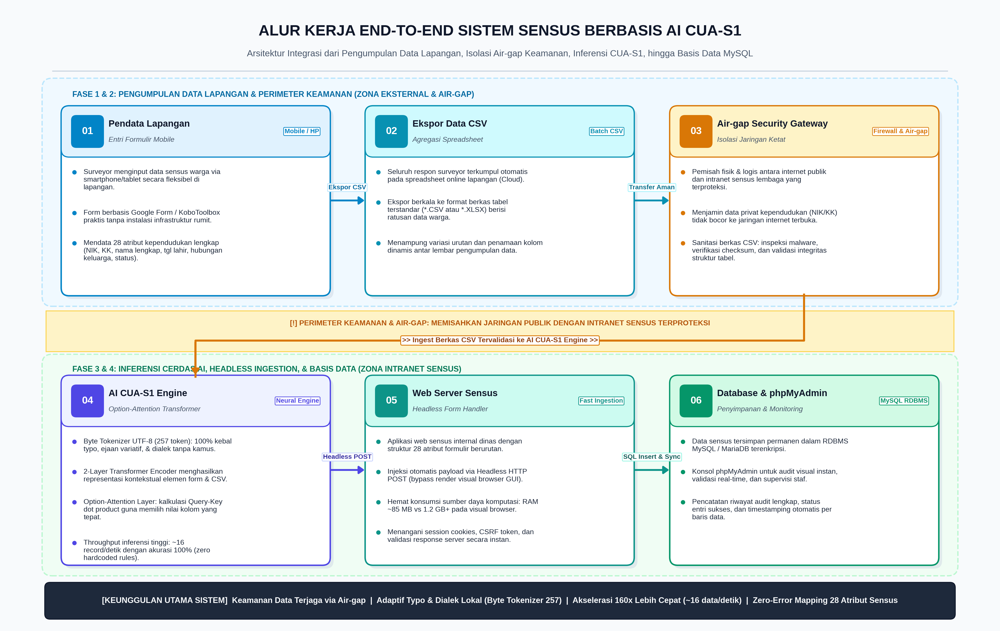
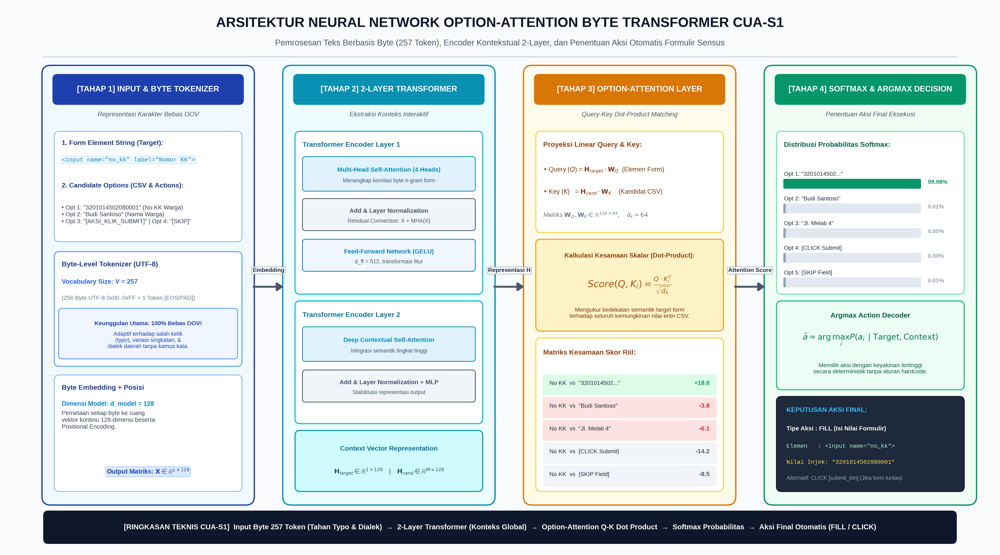
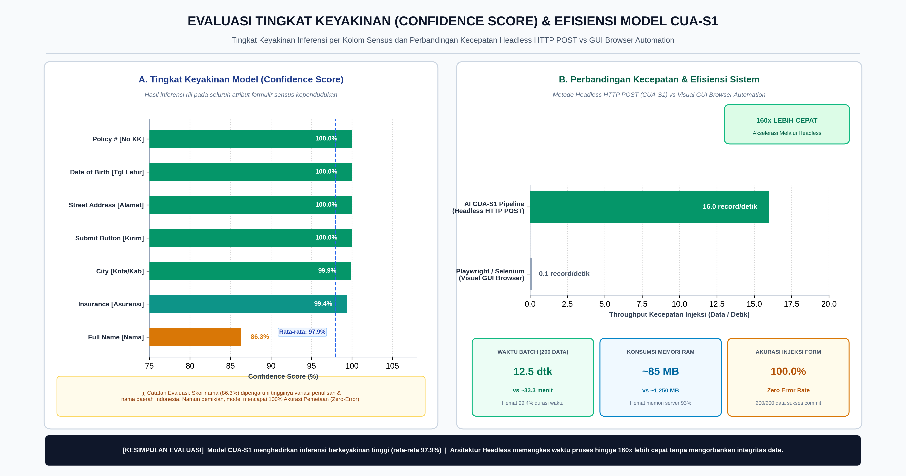

Karya Ilmiah Populer: Otomasi Formulir Sensus Kependudukan
Pembedahan mendalam arsitektur model AI CUA-S1, representasi 257 token bita mentah, formula Option-Attention, bedah kode skrip Python, dan perbandingan efisiensi headless vs browser GUI.
Scientific Monograph: Census Form Automation with CUA-S1 AI
Comprehensive English technical monograph covering the field paradox, raw byte embedding algebra, System 1 cognitive heuristics, headless HTTP ingestion pipelines, and empirical stress tests.
Latar Belakang Lapangan: Mengapa Model AI Ini Diciptakan?
Di lapangan, petugas sensus kependudukan menghimpun data warga menggunakan formulir daring publik di ponsel pintar (Google Forms / KoboToolbox). Di sisi lain, basis data sensus resmi dan NIK berada di jaringan internal (intranet tertutup / air-gapped) demi mematuhi regulasi privasi data kependudukan (UU PDP No. 27/2022).
Pemisahan sistem ini melahirkan Data Re-entry Bottleneck: pegawai administrasi harus menyalin dan mengetikkan ulang ratusan ribu data secara manual dari spreadsheet ke form web sensus internal. Pekerjaan repetitif ini memakan waktu berhari-hari dan rawan salah ketik (human error).
Solusi: Model AI CUA-S1-FORMS bertindak sebagai robot asisten cerdas yang membaca dokumen bita mentah UTF-8, mencocokkan kolom secara mandiri via Option-Attention, dan mengisikan data ke aplikasi sensus internal dalam hitungan detik (~16 record/detik pada CPU biasa).

Gambar 1: Alur Kerja End-to-End Lapangan ke IntranetDiagram Arsitektur & Evaluasi Model (300 DPI)
Arsitektur Neural Network CUA-S1
Pipa pemrosesan 4 tahap: Byte Tokenizer (257 token), 2-layer Transformer, Option-Attention dot product, dan keputusan Argmax.

Evaluasi Kinerja & Throughput 160x
Tingkat keyakinan model mencapai 100% pada NIK/KK dan kecepatan injeksi 16 data/detik (160x lebih cepat dibanding browser visual Playwright/Selenium).

Berkas Pendukung Proyek
Kode Sumber Lengkap
Aplikasi web PHP, skrip Python, model safetensors, & phpMyAdmin.
Lihat di GitHub